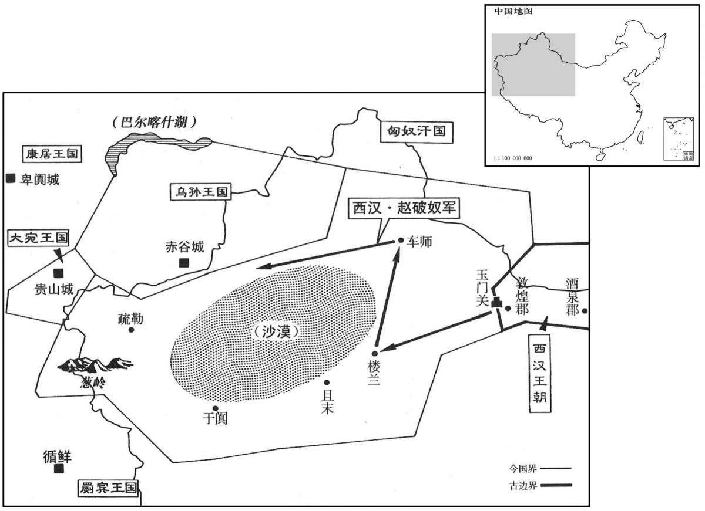
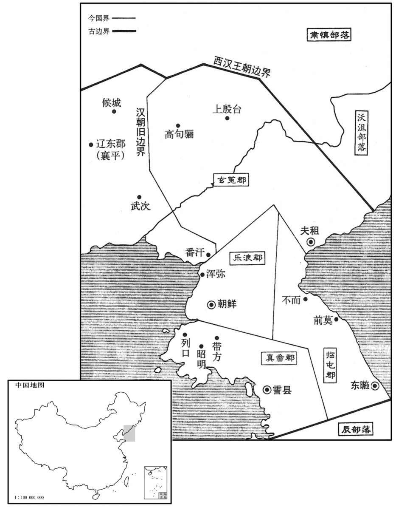

公元前108年资治通鉴：本年记事、原文与白话对照
按原书编年位置阅读；追叙和史论不等于本年发生的事件。白话采用所据译本，缺译不以生成译文补齐。
卷21 · 本年记事
公元前108年 · 汉世宗孝武皇帝元封三年
元封三年〔（癸酉、前一○八）〕
上传原文的注释括号有异常，字符原样保留；无法可靠划分的段落默认全文显示。
本年事件索引（现代整理）

本年形势与背景参考图

本年形势与背景参考图
冬，十二月，雷；雨雹，大如马头。〔雨，于具翻。〕
冬季，十二月，打雷；天降冰雹，像马头一般大小。
上遣将军赵破奴击车师。破奴与轻骑七百余先至，虏楼兰王，遂破车师，因举兵威以困乌孙、大宛之属。〔宛，于元翻。〕春，正月，甲申，封破奴为浞野侯。王恢佐破奴击楼兰，封恢为浩侯。〔从票侯赵破奴，元鼎五年坐酎金失侯，今以功复封浞野侯。浞野侯、浩侯，功臣表不书所食邑。浞，土角翻。〕于是酒泉列亭障至玉门矣。
汉武帝派将军赵破奴攻击西域车师国。赵破奴率轻骑兵七百余名先到西域，生擒楼兰王，然后大破车师国，并乘机以兵威困迫乌孙、大宛等国。春季，正月甲申（疑误），汉武帝封赵破奴为浞野侯。王恢因辅佐赵破奴攻袭楼兰国，被封为浩侯。于是从酒泉到玉门都有了汉朝设立的边防要塞。
初作角抵戏、鱼龙曼延之属。〔文颖曰：名此乐为角抵，两两相当，角力、角技艺射御，盖杂技乐也。师古曰：鱼龙者，为舍利之兽，先戏于庭极。毕，乃入殿前，化成比目鱼，跳跃漱水，作雾障日。毕，化成黄龙八丈，散戏于庭，炫耀日光。西京赋云：“海鳞变而成龙”，即谓此也。曼延，即西京赋所谓“巨兽百寻，是为曼延”者也。延，弋战翻。〕
角、鱼龙、曼延之类的杂技游戏开始兴起。
汉兵入朝鲜境，朝鲜王右渠发兵距险。楼船将军将齐兵七千人先至王险。右渠城守，窥知楼船军少，〔守，式又翻。少，诗沼翻。〕即出城击楼船；楼船军败散，遁山中十余日，稍求退严：“退”改“收”。】〕散卒，复聚。左将军击朝鲜浿〔【章：十四行本“浿”作“浿”；孔本同；张校同；退斋校同。下三见均同。】〕水西军，未能破。天子为两将未有利，〔为，于伪翻。〕乃使卫山因兵威往谕右渠。右渠见使者，顿首谢：“愿降，恐两将诈杀臣；今见信节，请复降。”〔复，扶又翻。降，户江翻；下同。〕遣太子入谢，献马五千匹，献马五千匹，及馈军粮；人众万余，持兵方渡浿水。使者及左将军疑其为变，谓太子：“已服降，宜令人毋持兵。”太子亦疑使者、左将军诈杀之，遂不渡浿水，复引归。山还报天子，天子诛山。
汉军进入朝鲜境内，朝鲜王卫右渠派兵占据险要之地进行抵抗。楼船将军杨仆率领齐国军队七千人先行抵达王险。卫右渠据城坚守，探知杨仆兵力单薄，便出城袭击杨仆。杨仆军兵败溃散，逃入山中十几天，后逐渐找回溃散的兵卒，重新聚集起来。左将军荀彘率部攻击朝鲜水西面的军队，未能攻破。汉武帝因为两位将军未能取胜，便派卫山前往朝鲜，用军事压力劝谕卫右渠归顺。卫右渠会见卫山，叩头道歉，说道：“我愿意归降，但害怕两位将军用诈术杀我；如今见到天子信节，所以请求再次归降。”卫右渠派太子前往汉朝谢罪，并献马五千匹，又为汉军提供军粮。朝鲜太子率众一万余人，手持武器，将要渡过水，卫山和荀彘疑心要生出变故，便对太子说：“既然已经归降，应命你手下人不要携带兵器。”太子也怕卫山和荀彘用计杀他，于是不肯渡水，带人返回。卫山回京报告汉武帝，汉武帝将卫山诛杀。
左将军破浿水上军，乃前至城下，围其西北。楼船亦往会，居城南。右渠遂坚守城，数月未能下。左将军所将燕、代卒多劲悍，楼船将齐卒已尝败亡困辱，卒皆恐，将心惭，〔将，即亮翻。悍，下罕翻，又侯旰翻。〕其围右渠，常持和节。左将军急击之，朝鲜大臣乃阴间使人私约降楼船，〔阴，暗密也。间，空隙也。言暗密遣使投空隙而出，与楼船约降。间，古苋翻。〕往来言尚未肯决。左将军数与楼船期战，〔数，所角翻；下同。〕楼船欲就其约，不会。左将军亦使人求间隙降下朝鲜，朝鲜不肯，心附楼船，以故两将不相能。左将军心意楼船前有失军罪，〔意，疑也，亿度也；料也。〕今与朝鲜私善，而又不降，疑其有反计，未敢发。
荀彘攻破水岸上的朝鲜军队，于是向前推进，逼临王险城下，包围城西北。杨仆也率领部众前往会合，屯兵城南。卫右渠坚决守城，汉军一连数月未能攻下。荀彘率领的燕、代地区兵卒大多强劲剽悍；而杨仆所率齐国兵卒因曾经遭到败亡困辱，全都心怀恐惧，将领也感到惭愧不安，所以在围困王险城时，常常主张和平解决。荀彘督军猛攻，朝鲜大臣们就暗中派人与杨仆私下商议投降之事。使者往来磋商，还未肯作决定。荀彘几次和杨仆商约共同作战的日期，但杨仆想与朝鲜私定和约，所以不与荀彘会合。荀彘也派人寻找机会劝说朝鲜归降，而朝鲜不肯，而希望向杨仆投降，从而引起荀、杨两位将军的不和。荀彘认为，杨仆先前曾经兵败，犯下丧失所属部队之罪，而今与朝鲜私相友善，而朝鲜又不归降，所以怀疑他有背叛的阴谋，但未敢发动。
天子以两将围城乖异，兵久不决，使济南太守公孙遂往正之，〔济，子礼翻。考异曰：史记作“征之”，盖字误；今从汉书。〕有便宜得以从事。遂至，左将军曰：“朝鲜当下，久之不下者，楼船数期不会。”具以素所意告，曰：“今如此不取，恐为大害。”遂亦以为然，乃以节召楼船将军入左将军营计事，即命左将军麾下执楼船将军，并其军；以报天子，天子诛遂。〔考异曰：汉书作“许遂”。按左将军亦以争功相嫉乖计弃市，则武帝必以遂执楼船为非，汉书作“许”，盖字误，今从史记。〕
汉武帝因为荀彘、杨仆二人包围王险城后行动不一致，军队许久不决战，所以派济南太守公孙遂前往纠正，并授权公孙遂遇事可以相机行事。公孙遂到崐达后，荀彘说：“朝鲜早就应当攻下；所以拖了这么久还未攻下，是因为楼船将军好几次不按照约定的日期会合。”又将平时自己对杨仆的怀疑一一告诉公孙遂，说道：“现在这样还不先发制人，恐怕会成大祸。”公孙遂也同意荀彘的看法，便用天子符节召楼船将军杨仆来左将军营中议事，当即命左将军帐下武士将楼船将军逮捕，并兼并了其所属部队。公孙遂将此事报告汉武帝，汉武帝将公孙遂处死。
左将军已并两军，即急击朝鲜。朝鲜相路人、相韩阴、〔考异曰：汉书“阴”作“陶”，今从史记。〕尼溪相参、将军王唊〔应劭曰：凡五人；戎狄不知官纪，故皆称相。师古曰：相路人，一也，相韩陶，二也，尼溪相参，三也，将军王唊，四也，应氏乃云五人，失之矣，不当寻下文乎！余据“韩陶”今作“韩阴”，盖从史记。相，息亮翻。唊，音颊。〕相与谋曰：“始欲降楼船，楼船今执，独左将军并将，〔将，即亮翻。〕战益急，恐不能与战；王又不肯降。”阴、唊、路人皆亡降汉，路人道死。夏，尼溪参使人杀朝鲜王右渠来降。王险城未下，故右渠之大臣成己又反，复攻吏。〔复，扶又翻。〕左将军使右渠子长、降相路人之子最〔师古曰：右渠之子名长。路人先已降汉而死于道，故谓之降相，最者其子名。〕告谕其民，诛成己。以故遂定朝鲜，为乐浪、临屯、玄菟、真番四郡。〔乐浪郡治朝鲜县，盖以右渠所都为治所也。臣瓒曰：茂陵书：临屯郡治东暆县，去长安六千一百三十八里，领十五县。玄菟郡，本高句骊也，既平朝鲜，并开为郡，治沃沮城，后为夷貊所侵，徙郡句骊西北。真番郡治霅县，去长安七千六百四十里，领十五县。余据后废临屯、真番二郡。班志，东暆县属乐浪。霅县无所考。乐，音洛。浪，音狼。〕封参为澅清侯，〔功臣表：澅清侯食邑于齐。澅，音获，又户卦翻。〕阴为萩苴侯，〔班书功臣表作“荻苴侯”，食邑于勃海。此从史记作“萩”，音秋。苴，子余翻。〕唊为平州侯，〔功臣表：平州侯食邑于泰山梁父县。〕长为几侯，〔功臣表作“几侯张洛”，食邑于河东。〕最以父死颇有功，为涅阳侯。〔涅阳县属南阳郡。涅，乃结翻。〕
左将军荀彘将两支部队合并后，随即加紧对朝鲜发动进攻。朝鲜国相路人、国相韩阴、尼相参、将军王等相互商议道：“当初打算向楼船将军投降，今楼船将军已被逮捕，只有左将军一人指挥汉军，攻击越来越猛烈，恐怕我方无法抵挡，而国王偏又不肯向左将军投降。”于是韩阴、王、路人都逃亡投向汉军大营，路人死于半途之中。夏季，尼相参派人杀死朝鲜王卫右渠，前来投降。汉军尚未开进王险城时，原卫右渠的大臣成己降而复叛，再次进攻汉朝官吏。荀彘命卫右渠的儿子卫长、降相路人的儿子路最劝告朝鲜民众归顺汉朝，并诛杀成己。汉朝因此而平定朝鲜，设置乐浪、临屯、玄菟、真番四郡。封参为清侯，韩阴为苴侯，王为平州侯，卫长为几侯；路最的父亲路人为降汉而死，颇有功劳，封为涅阳侯。
左将军征至，坐争功相嫉乖计，弃市。楼船将军亦坐兵至列口，〔班志，列口县属乐浪郡。郭璞曰：山海经，列水在辽东，余谓其地当列水入海之口。〕当待左将军，擅先纵，失亡多，当诛，赎为庶人。
左将军荀彘被召回长安，汉武帝以争功相嫉、计谋乖戾的罪名将其当众斩首。楼船将军杨仆也因当初兵至列口时，本应等待与左将军会合，却擅自先行，造成很大伤亡，其罪本应斩首，赎身后成为平民。
班固曰：玄菟、乐浪、本箕子所封。〔武王封箕子于朝鲜。〕昔箕子居朝鲜，教其民以礼义，田蚕织作，为民设禁八条，〔为，于伪翻。〕相杀，以当时偿杀；相伤，以谷偿；相盗者，男没入为其家奴，女为婢；欲自赎者人五十万，虽免为民，俗犹羞之，嫁娶无所售。是以其民终不相盗，无门户之闭，妇人贞信不淫辟。〔辟，读曰僻。〕其田野饮食以笾豆，都邑颇放效吏，往往以杯器食。〔放，甫往翻。〕郡初取吏于辽东，吏见民无闭臧，〔臧，读曰藏。〕及贾人往者，〔贾，音古。〕夜则为盗，俗稍益薄，今于犯禁寖多，至六十余条。可贵哉，仁贤之化也！然东夷天性柔顺，异于三方之外。故孔子悼道不行，设浮桴于海，欲居九夷，〔并见论语。桴，编竹木为之，大者曰筏，小者曰桴。桴，芳无翻。〕有以也夫！
班固曰：玄菟、乐浪，本是箕子的封国。当初箕子居住在朝鲜，用礼义教导他的百姓，掌握种田、养蚕、纺织的方法，并为他们制定八条法令。凡杀人的，当即以本人性命相抵；伤人的，用谷物赔偿对方的损失；盗窃的，男子给被盗者做奴，女子做婢；想要自赎其罪的，一人要交赎金五十万钱，虽被免罪为平民，但按风俗仍被人看不起，想结婚都找不到对象。因此，当地百姓始终不偷不盗，不必为防偷盗而关门闭户；女子都守贞节，没有淫乱行为。在乡间，人们都用竹器和木器盛放食物；在城市中，人们颇仿效官吏的作法，往往用杯盘器皿盛放食物。郡的官员，最初是来自辽东，其中有些人和前来经商的商人看到这里的老百姓不闭门户，便在夜间进行偷盗，使当地淳朴的风俗渐遭破坏，以致如今犯禁者日益增多，法令也增加到六十余条。由此可见，仁人圣贤的教化是多么的可贵啊！然而，东夷民族天性柔顺，与南、西、北三方各民族不同。所以孔子哀痛他的道理不能得到推行时，打算乘筏出海，要到九夷地区去居住，这种想法是有根据的。
秋，七月，胶西于王端薨。〔端，景帝子，三年受封。谥法：能优其德曰于。考异曰：荀纪“端”皆作“瑞”，今从汉书。〕
秋季，七月，胶西王刘端去世。
武都氐反，分徙酒泉。〔杜佑曰：氐者，西戎别种。〕
武都郡氐族叛乱，汉朝将他们分批迁往酒泉。
四年，(甲戍，前107)